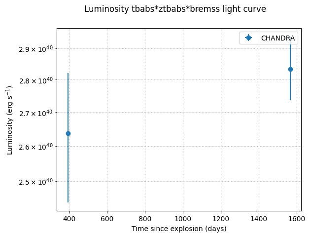

2. Spectrum fitting for SN2014C from Chandra data.#
ObsId: 17549 and 21077
[4]:
# Standard imports
import os
import numpy as np
import matplotlib.pyplot as plt
import matplotlib as mpl
import pandas as pd
try:
import xspec
except: # If ModuleNotFoundError, initialize HEASOFT.
print(f"PyXspec was not found, please initialize HEASOFT first in shell")
import xsnap
from xsnap import *
[5]:
spec_files = ['./data/17569/primary/spec17569_grp.pi',
'./data/21077/primary/spec21077_grp.pi']
# Using parameters from this paper:
# https://iopscience.iop.org/article/10.3847/1538-4357/ad9c76
# Time of explosion in MJD
tExplosion= 56658.91 # MJD
# Distance in Mpc
dist = 15.1 # Mpc
[6]:
# Use constrain temperature with T = 34 keV (t/13)^(-0.25)
# Meaning it's 34 * (1/13)^(-0.25) t^(-0.25)
norm = 34 * (1/13)**(-0.25)
exp = -0.25
temp = TemperatureEstimator(norm=norm, exponent=exp, tExplosion=tExplosion)
df_temp = temp.estimate(files=spec_files)
df_temp # here we estimate the temperature based on our model
[6]:
| time_since_explosion | lo_time_err | hi_time_err | temperature | lo_temp_err | hi_temp_err | |
|---|---|---|---|---|---|---|
| 0 | 393.706775 | 0.0 | 0.0 | 14.493442 | 0.0 | 0.0 |
| 1 | 1565.644759 | 0.0 | 0.0 | 10.263405 | 0.0 | 0.0 |
[7]:
# Initialize SpectrumManager class to help in plotting light curve
manager = SpectrumManager(tExplosion = tExplosion)
# Fit the first spectrum
# SpectrumFit by default use 'aspl' for Solar Abundance
spec17569 = SpectrumFit()
spec17569.load_data(spec_files[0])
spec17569.set_rebin(5, 3)
spec17569.ignore("**-0.5 8.0-**") # Chandra is well-calibrated in 0.5 - 8.0 keV
# Now, we set the model that we want
# Supposedly we use TBabs, TBabs can be automatically
# calculated through the RA and Dec Obj available in
# the header of the spectrum file
spec17569.set_model(
"tbabs*ztbabs*bremss",
zTBabs_nH=2.7,
zTBabs_Redshift=0,
# Here, we freeze the temperature for tutorial purposes
bremss_kT=f"{df_temp['temperature'].iloc[0]} -1",
bremss_norm=0
)
spec17569.fit()
# We set plot, if device="/null" it automatically uses matplotlib to plot
spec17569.set_plot("ldata", device="/svg")
# Fitting the parameters for zTBabs nH and bremss norm
spec17569.get_params("1.0 2 5")
# Get both absorbed and unabsorbed fluxes
df_flux = spec17569.get_fluxes()
# Getting observation time to help in plotting the light curve
spec17569.get_time()
# Getting count rates
spec17569.get_counts()
# Getting luminosity based on given flux and distance
spec17569.get_lumin(fluxes=df_flux['unabsorbed'], distance=dist)
# Load the spectrum to the manager
# Due to the nature of PyXspec,
# You must fit the spectrum and
# load it to the manager one by one
manager.load(spec17569)
Solar Abundance Vector set to aspl: Asplund M., Grevesse N., Sauval A.J. & Scott P., ARAA, 47, 481 (2009)
Warning: RMF DETNAM keyword (ACIS-7) is not consistent with that in spectrum (ACIS-35678)
1 spectrum in use
Spectral Data File: /Users/ferdinand/Research/WynnXraySN/XSNAP/notebook/data/17569/primary/spec17569_grp.pi Spectrum 1
Net count rate (cts/s) for Spectrum:1 2.536e-02 +/- 1.601e-03 (99.8 % total)
Assigned to Data Group 1 and Plot Group 1
Noticed Channels: 1-192
Telescope: CHANDRA Instrument: ACIS Channel Type: PI
Exposure Time: 9914 sec
Using fit statistic: chi
Using Background File spec17569_bkg.pi
Background Exposure Time: 9914 sec
Using Response (RMF) File spec17569.rmf for Source 1
Using Auxiliary Response (ARF) File spec17569.corr.arf
ignore: 1 channels ignored from source number 1
2 channels (1-2) ignored in spectrum # 1
5 channels (188-192) ignored in spectrum # 1
========================================================================
Model TBabs<1>*zTBabs<2>*bremss<3> Source No.: 1 Active/On
Model Model Component Parameter Unit Value
par comp
X-axis set to 'keV'
Plot device set to '/svg'
1 1 TBabs nH 10^22 1.00000 +/- 0.0
2 2 zTBabs nH 10^22 1.00000 +/- 0.0
3 2 zTBabs Redshift 0.0 frozen
4 3 bremss kT keV 7.00000 +/- 0.0
5 3 bremss norm 1.00000 +/- 0.0
________________________________________________________________________
tbvabs Version 2.3
Cosmic absorption with grains and H2, modified from
Wilms, Allen, & McCray, 2000, ApJ 542, 914-924
Questions: Joern Wilms
joern.wilms@sternwarte.uni-erlangen.de
joern.wilms@fau.de
http://pulsar.sternwarte.uni-erlangen.de/wilms/research/tbabs/
PLEASE NOTICE:
To get the model described by the above paper
you will also have to set the abundances:
abund wilm
Note that this routine ignores the current cross section setting
as it always HAS to use the Verner cross sections as a baseline.
Fit statistic : Chi-Squared 2.054384e+10 using 185 bins.
Test statistic : Chi-Squared 2.054384e+10 using 185 bins.
Null hypothesis probability of 0.000000e+00 with 181 degrees of freedom
Current data and model not fit yet.
Fit statistic : Chi-Squared 9.643801e+09 using 185 bins.
Test statistic : Chi-Squared 9.643801e+09 using 185 bins.
Null hypothesis probability of 0.000000e+00 with 181 degrees of freedom
Current data and model not fit yet.
Fit statistic : Chi-Squared 9.643801e+09 using 185 bins.
Test statistic : Chi-Squared 9.643801e+09 using 185 bins.
Null hypothesis probability of 0.000000e+00 with 181 degrees of freedom
Current data and model not fit yet.
Fit statistic : Chi-Squared 1.151778e+10 using 185 bins.
Test statistic : Chi-Squared 1.151778e+10 using 185 bins.
Null hypothesis probability of 0.000000e+00 with 182 degrees of freedom
Current data and model not fit yet.
Fit statistic : Chi-Squared 245.85 using 185 bins.
Test statistic : Chi-Squared 245.85 using 185 bins.
Null hypothesis probability of 1.13e-03 with 182 degrees of freedom
Current data and model not fit yet.
Fit statistic : Chi-Squared 245.85 using 185 bins.
Test statistic : Chi-Squared 245.85 using 185 bins.
Null hypothesis probability of 1.33e-03 with 183 degrees of freedom
Current data and model not fit yet.
Parameters defined:
========================================================================
Model TBabs<1>*zTBabs<2>*bremss<3> Source No.: 1 Active/On
Model Model Component Parameter Unit Value
par comp
1 1 TBabs nH 10^22 6.98000E-02 frozen
2 2 zTBabs nH 10^22 2.70000 +/- 0.0
3 2 zTBabs Redshift 0.0 frozen
4 3 bremss kT keV 14.4934 frozen
5 3 bremss norm 0.0 +/- 0.0
________________________________________________________________________
renorm: no renormalization necessary
Fit statistic : Chi-Squared 245.85 using 185 bins.
Test statistic : Chi-Squared 245.85 using 185 bins.
Null hypothesis probability of 1.33e-03 with 183 degrees of freedom
Current data and model not fit yet.
Default fit statistic is set to: C-Statistic
This will apply to all current and newly loaded spectra.
Fit statistic : C-Statistic 3246.11 using 185 bins.
Test statistic : Chi-Squared 245.85 using 185 bins.
Null hypothesis probability of 1.33e-03 with 183 degrees of freedom
Current data and model not fit yet.
Parameters
C-Statistic |beta|/N Lvl 2:nH 5:norm
Due to zero model norms, the following fit parameters are temporarily frozen:2
1766.41 6.10364e+08 -3 2.70000 2.72161e-06
1434.83 4.26514e+07 -4 2.66308 5.49692e-06
1114.95 2.12355e+07 -5 2.61286 1.08644e-05
817.719 1.05007e+07 -6 2.58912 2.10969e-05
560.232 5.09056e+06 -7 2.57989 3.96708e-05
366.37 2.38114e+06 -8 2.57887 7.02965e-05
256.092 1.03597e+06 -9 2.58318 0.000112106
219.99 385658 -10 2.59027 0.000151748
215.913 100536 -11 2.59667 0.000170793
215.853 11191.4 -12 2.60030 0.000173575
215.853 179.794 -13 2.60192 0.000173676
==============================
Variances and Principal Axes
2 5
1.2263E-10| -0.0000 1.0000
5.4982E-02| 1.0000 0.0000
------------------------------
========================
Covariance Matrix
1 2
5.498e-02 1.923e-06
1.923e-06 1.899e-10
------------------------
========================================================================
Model TBabs<1>*zTBabs<2>*bremss<3> Source No.: 1 Active/On
Model Model Component Parameter Unit Value
par comp
1 1 TBabs nH 10^22 6.98000E-02 frozen
2 2 zTBabs nH 10^22 2.60192 +/- 0.234482
3 2 zTBabs Redshift 0.0 frozen
4 3 bremss kT keV 14.4934 frozen
5 3 bremss norm 1.73676E-04 +/- 1.37798E-05
________________________________________________________________________
Fit statistic : C-Statistic 215.85 using 185 bins.
Test statistic : Chi-Squared 238.21 using 185 bins.
Null hypothesis probability of 3.77e-03 with 183 degrees of freedom
Parameter Confidence Range (1)
2 2.30414 2.92709 (-0.29848,0.32447)
5 0.000158819 0.00018985 (-1.48813e-05,1.61498e-05)
Spectrum 1: Lower range bound 0.3 reset by matrix bound to 0.3
Parameter distribution is derived from fit covariance matrix.
Model Flux 8.638e-05 photons (5.9419e-13 ergs/cm^2/s) range (0.30000 - 10.000 keV)
Error range 8.022e-05 - 9.217e-05 (5.500e-13 - 6.356e-13) (68.00% confidence)
Fit statistic : C-Statistic 215.96 using 185 bins.
Test statistic : Chi-Squared 244.75 using 185 bins.
Null hypothesis probability of 1.56e-03 with 183 degrees of freedom
Current data and model not fit yet.
Fit statistic : C-Statistic 609.99 using 185 bins.
Test statistic : Chi-Squared 3405.62 using 185 bins.
Null hypothesis probability of 0.00e+00 with 183 degrees of freedom
Current data and model not fit yet.
Warning: Either variance is not available through
valid fit or chains, or no models are currently
active. flux error will not be calculated.
Spectrum 1: Lower range bound 0.3 reset by matrix bound to 0.3
Model Flux 0.00032857 photons (9.6665e-13 ergs/cm^2/s) range (0.30000 - 10.000 keV)
[7]:
<xsnap.spectrum.SpectrumManager at 0x32d9ecfb0>
[8]:
# Fit the second spectrum by re-doing what we did in the first spectrum
spec21077 = SpectrumFit()
# Use clear=True in loading new data to clear the previous spectrum loaded in PyXspec
# One can also just use xspec.AllData.clear() before fitting the second spectrum
spec21077.load_data(spec_files[1], clear=True)
spec21077.set_rebin(5, 3)
spec21077.ignore("**-0.5 8.0-**") # Chandra is well-calibrated in 0.5 - 8.0 keV
spec21077.set_model(
"tbabs*ztbabs*bremss",
zTBabs_nH=2.7,
zTBabs_Redshift=0,
# Here, we freeze the temperature for tutorial purposes
bremss_kT=f"{df_temp['temperature'].iloc[1]} -1",
bremss_norm=0
)
spec21077.fit()
spec21077.set_plot("ldata", device="/svg")
spec21077.get_params("1.0 2 5")
df_flux = spec21077.get_fluxes()
spec21077.get_time()
spec21077.get_counts()
spec21077.get_lumin(fluxes=df_flux['unabsorbed'], distance=dist)
manager.load(spec21077)
Solar Abundance Vector set to aspl: Asplund M., Grevesse N., Sauval A.J. & Scott P., ARAA, 47, 481 (2009)
Fit statistic : C-Statistic 609.99 using 185 bins.
Test statistic : Chi-Squared 3405.62 using 185 bins.
Null hypothesis probability of 0.00e+00 with 183 degrees of freedom
Current data and model not fit yet.
Warning: RMF DETNAM keyword (ACIS-7) is not consistent with that in spectrum (ACIS-35678)
1 spectrum in use
Spectral Data File: /Users/ferdinand/Research/WynnXraySN/XSNAP/notebook/data/21077/primary/spec21077_grp.pi Spectrum 1
Net count rate (cts/s) for Spectrum:1 4.856e-02 +/- 1.568e-03 (99.8 % total)
Assigned to Data Group 1 and Plot Group 1
Noticed Channels: 1-345
Telescope: CHANDRA Instrument: ACIS Channel Type: PI
Exposure Time: 1.979e+04 sec
Using fit statistic: cstat
Using Background File spec21077_bkg.pi
Background Exposure Time: 1.979e+04 sec
Using Response (RMF) File spec21077.rmf for Source 1
Using Auxiliary Response (ARF) File spec21077.corr.arf
Fit statistic : C-Statistic 510.29 using 345 bins.
Test statistic : Chi-Squared 1892.81 using 345 bins.
Null hypothesis probability of 3.25e-212 with 343 degrees of freedom
Current data and model not fit yet.
ignore: 1 channels ignored from source number 1
Fit statistic : C-Statistic 508.69 using 344 bins.
Test statistic : Chi-Squared 1134.81 using 344 bins.
Null hypothesis probability of 1.08e-85 with 342 degrees of freedom
Current data and model not fit yet.
5 channels (1-5) ignored in spectrum # 1
9 channels (337-345) ignored in spectrum # 1
Fit statistic : C-Statistic 478.33 using 331 bins.
Test statistic : Chi-Squared 1054.76 using 331 bins.
Null hypothesis probability of 6.04e-77 with 329 degrees of freedom
Current data and model not fit yet.
========================================================================
Model TBabs<1>*zTBabs<2>*bremss<3> Source No.: 1 Active/On
X-axis set to 'keV'
Plot device set to '/svg'
Model Model Component Parameter Unit Value
par comp
1 1 TBabs nH 10^22 1.00000 +/- 0.0
2 2 zTBabs nH 10^22 1.00000 +/- 0.0
3 2 zTBabs Redshift 0.0 frozen
4 3 bremss kT keV 7.00000 +/- 0.0
5 3 bremss norm 1.00000 +/- 0.0
________________________________________________________________________
Fit statistic : C-Statistic 5.932920e+06 using 331 bins.
Test statistic : Chi-Squared 1.681188e+10 using 331 bins.
Null hypothesis probability of 0.000000e+00 with 327 degrees of freedom
Current data and model not fit yet.
Fit statistic : C-Statistic 4.192245e+06 using 331 bins.
Test statistic : Chi-Squared 1.028532e+10 using 331 bins.
Null hypothesis probability of 0.000000e+00 with 327 degrees of freedom
Current data and model not fit yet.
Fit statistic : C-Statistic 4.192245e+06 using 331 bins.
Test statistic : Chi-Squared 1.028532e+10 using 331 bins.
Null hypothesis probability of 0.000000e+00 with 327 degrees of freedom
Current data and model not fit yet.
Fit statistic : C-Statistic 4.532751e+06 using 331 bins.
Test statistic : Chi-Squared 1.228026e+10 using 331 bins.
Null hypothesis probability of 0.000000e+00 with 328 degrees of freedom
Current data and model not fit yet.
Fit statistic : C-Statistic 12299.55 using 331 bins.
Test statistic : Chi-Squared 948.49 using 331 bins.
Null hypothesis probability of 1.28e-61 with 328 degrees of freedom
Current data and model not fit yet.
Fit statistic : C-Statistic 12299.55 using 331 bins.
Test statistic : Chi-Squared 948.49 using 331 bins.
Null hypothesis probability of 2.18e-61 with 329 degrees of freedom
Current data and model not fit yet.
Parameters defined:
========================================================================
Model TBabs<1>*zTBabs<2>*bremss<3> Source No.: 1 Active/On
Model Model Component Parameter Unit Value
par comp
1 1 TBabs nH 10^22 6.98000E-02 frozen
2 2 zTBabs nH 10^22 2.70000 +/- 0.0
3 2 zTBabs Redshift 0.0 frozen
4 3 bremss kT keV 10.2634 frozen
5 3 bremss norm 0.0 +/- 0.0
________________________________________________________________________
Fit statistic : C-Statistic 12299.55 using 331 bins.
Test statistic : Chi-Squared 948.49 using 331 bins.
Null hypothesis probability of 2.18e-61 with 329 degrees of freedom
Current data and model not fit yet.
Default fit statistic is set to: C-Statistic
This will apply to all current and newly loaded spectra.
Fit statistic : C-Statistic 12299.55 using 331 bins.
Test statistic : Chi-Squared 948.49 using 331 bins.
Null hypothesis probability of 2.18e-61 with 329 degrees of freedom
Current data and model not fit yet.
Parameters
C-Statistic |beta|/N Lvl 2:nH 5:norm
Due to zero model norms, the following fit parameters are temporarily frozen:2
6802.43 1.04612e+09 -3 2.70000 5.66522e-06
5378.93 7.85834e+07 -4 2.33674 1.09382e-05
4125.92 4.12148e+07 -5 2.25075 2.13491e-05
2959.85 2.05841e+07 -6 2.15847 4.06991e-05
1934.47 1.01187e+07 -7 2.01221 7.40124e-05
1135.48 4.8535e+06 -8 1.76836 0.000123194
641.173 2.2087e+06 -9 1.40295 0.000175890
432.525 888078 -10 0.971197 0.000202312
379.995 274436 -11 0.639207 0.000197142
374.326
63224 -12 0.510655 0.000191171
374.162 7984.31 -13 0.487432 0.000189817
374.16 261.196 -14 0.484883 0.000189622
==============================
Variances and Principal Axes
2 5
3.7992E-11| -0.0001 1.0000
3.8787E-03| 1.0000 0.0001
------------------------------
========================
Covariance Matrix
1 2
3.879e-03 3.271e-07
3.271e-07 6.558e-11
------------------------
========================================================================
Model TBabs<1>*zTBabs<2>*bremss<3> Source No.: 1 Active/On
Model Model Component Parameter Unit Value
par comp
1 1 TBabs nH 10^22 6.98000E-02 frozen
2 2 zTBabs nH 10^22 0.484883 +/- 6.22796E-02
3 2 zTBabs Redshift 0.0 frozen
4 3 bremss kT keV 10.2634 frozen
5 3 bremss norm 1.89622E-04 +/- 8.09837E-06
________________________________________________________________________
Fit statistic : C-Statistic 374.16 using 331 bins.
Test statistic : Chi-Squared 504.96 using 331 bins.
Null hypothesis probability of 1.41e-09 with 329 degrees of freedom
Parameter Confidence Range (1)
2 0.420216 0.551138 (-0.0644189,0.0665032)
5 0.000181486 0.000198013 (-8.11503e-06,8.4117e-06)
Spectrum 1: Lower range bound 0.3 reset by matrix bound to 0.3
Parameter distribution is derived from fit covariance matrix.
Model Flux 0.00016218 photons (7.9563e-13 ergs/cm^2/s) range (0.30000 - 10.000 keV)
Error range 0.0001571 - 0.0001678 (7.686e-13 - 8.252e-13) (68.00% confidence)
Fit statistic : C-Statistic 376.27 using 331 bins.
Test statistic : Chi-Squared 537.16 using 331 bins.
Null hypothesis probability of 3.18e-12 with 329 degrees of freedom
Current data and model not fit yet.
Fit statistic : C-Statistic 567.72 using 331 bins.
Test statistic : Chi-Squared 1483.87 using 331 bins.
Null hypothesis probability of 6.09e-146 with 329 degrees of freedom
Current data and model not fit yet.
Warning: Either variance is not available through
valid fit or chains, or no models are currently
active. flux error will not be calculated.
Spectrum 1: Lower range bound 0.3 reset by matrix bound to 0.3
Model Flux 0.00037657 photons (1.0385e-12 ergs/cm^2/s) range (0.30000 - 10.000 keV)
[8]:
<xsnap.spectrum.SpectrumManager at 0x32d9ecfb0>
2.1. Plotting light curves#
The light curves will be a normal matplotlib plot with labels is grouped by instruments
[9]:
fig_fluxes = manager.plot_flux()
[10]:
fig_lumin = manager.plot_lumin()

[11]:
fig_counts = manager.plot_counts()
[12]:
fig_params = manager.plot_params()
2.2. CSM Analysis#
With this analysis class, we can fit luminosity, temperature, and CSM density. From there, we can also estimate the mass-loss rate of the supernova progenitor.
[13]:
analyzer = CSMAnalysis(manager)
df_fit = analyzer.fit_lumin()
df_fit
0%| | 0/10000 [00:00<?, ?it/s]/opt/anaconda3/lib/python3.12/site-packages/emcee/moves/red_blue.py:99: RuntimeWarning: invalid value encountered in scalar subtract
lnpdiff = f + nlp - state.log_prob[j]
100%|██████████| 10000/10000 [00:12<00:00, 798.62it/s]

/Users/ferdinand/Research/WynnXraySN/XSNAP/src/xsnap/_fitting.py:312: RuntimeWarning: divide by zero encountered in scalar divide
chi2_red = chi2 / dof

[13]:
| model | norm | lo_norm_err | hi_norm_err | exp | lo_exp_err | hi_exp_err | ndata | |
|---|---|---|---|---|---|---|---|---|
| 0 | tbabs*ztbabs*bremss | 1.904780e+40 | 4.960042e+39 | 4.312637e+39 | 0.045843 | 0.093367 | 0.099176 | 2 |
[14]:
fig_lumin = analyzer.plot_lumin()
[16]:
df_densities = analyzer.calc_density(distance=dist, nwalkers=200, nsteps=5000, nburn=1000)
df_densities
100%|██████████| 5000/5000 [02:45<00:00, 30.25it/s]
/Users/ferdinand/Research/WynnXraySN/XSNAP/src/xsnap/_fitting.py:312: RuntimeWarning: divide by zero encountered in scalar divide
chi2_red = chi2 / dof
[16]:
| time_since_explosion | rho | lo_rho_err | hi_rho_err | |
|---|---|---|---|---|
| 0 | 393.706775 | 2.542176e-18 | 1.088969e-19 | 1.181796e-19 |
| 1 | 1565.644759 | 3.349231e-19 | 7.167439e-21 | 7.429471e-21 |
[17]:
fig_density = analyzer.plot_density()

[18]:
df_mass_loss = analyzer.get_mdot()
df_mass_loss # in Msolar/yr
[18]:
| m_dot | lo_m_dot_err | hi_m_dot_err | |
|---|---|---|---|
| 0 | 0.001835 | 0.000038 | 0.000037 |